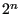
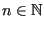

Next: Determining the loading Up: Three-Dimensional Navier-Stokes Calculations Previous: The left hand sides Contents
The first action within the major loop is the determination of the time increment in subroutine compdt. The formulas for doing so are Formulas (475) and (477) for liquids and gases, respectively. Notice that the solution influences the time increment, so the increment has to be recalculated at the start of the major loop. For steady state calculations the time step is only recalculated in iterations , , since the change in solution decreases the closer steady state. This accelerates the steady state calculations.